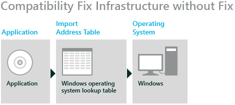
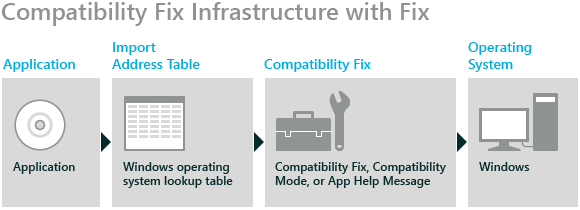

Тематический
план ]
[
Причины
возникновения проблем совместимости. Методы выявления проблем совместимости ПО.]
Введение
По мере развития операционной системы Windows
поддержки новых технологий и функций может измениться реализация некоторых
функций. Это может привести к проблемам с приложениями, которые основываются на
исходной реализации. Вы можете избежать проблем с совместимостью с помощью
инфраструктуры совместимости приложений Microsoft Windows (исправление
совместимости) для создания исправления для определенной версии приложения.
Принцип работы инфраструктуры
исправления совместимости
Инфраструктура исправления совместимости использует
возможности связывания API для перенаправления приложения из кода Windows
непосредственно в альтернативный код, реализующий исправление совместимости.
В формате переносимого исполняемого файла Windows
есть заголовки, содержащие каталоги данных, которые используются для
обеспечения уровня косвенного переключения между приложением и связанным
файлом. Вызовы API внешних двоичных файлов находятся в таблице адресов импорта
(IAT), которая затем напрямую вызывает операционную систему Windows, как показано
на приведенном ниже рисунке.

В частности, процесс изменяет адрес уязвимой функции
Windows в IAT таким образом, чтобы она указывала на код исправления
совместимости, как показано на приведенном ниже рисунке.

Примечание
Для статических связанных DLL перенаправление кода
происходит при загрузке приложения. Кроме того, вы можете исправить динамически
связываемые DLL-библиотеки, подключая функцию GetProcAddress API.
Влияние инфраструктуры исправления
совместимости на проектирование
При определении стратегии исправления приложения
необходимо учитывать важные моменты в соответствии с определенными
характеристиками инфраструктуры исправления совместимости.
- Исправление
совместимости не является частью операционной системы Windows (как
показано на предыдущем рисунке). Следовательно, те же ограничения
безопасности применяются к исправлению совместимости, которое применимо к
коду приложения, что означает, что вы не можете использовать исправления
совместимости для обхода каких либо механизмов безопасности операционной
системы. Таким образом, исправления совместимости не увеличивают уровень
безопасности, и вам не нужно понижать параметры безопасности для
обеспечения исправлений совместимости.
- Инфраструктура
исправления совместимости внедряет в приложение дополнительный код, прежде
чем он будет вызывать операционную систему. Это означает, что любое
решение, которое может быть выполнено исправлением совместимости, также
можно решить путем исправления кода приложения.
- Исправления
совместимости выполняются как код пользовательского режима внутри процесса
приложения в пользовательском режиме. Это означает, что вы не можете
использовать исправление совместимости для устранения проблем с кодом в
режиме ядра. Например, нельзя использовать исправление совместимости для устранения
проблем с драйверами устройств.
Примечание
Некоторые антивирусные программы,
брандмауэры и вредоносные программы работают в режиме ядра.